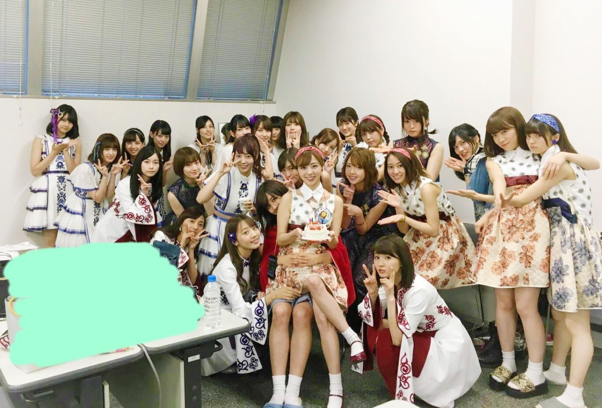
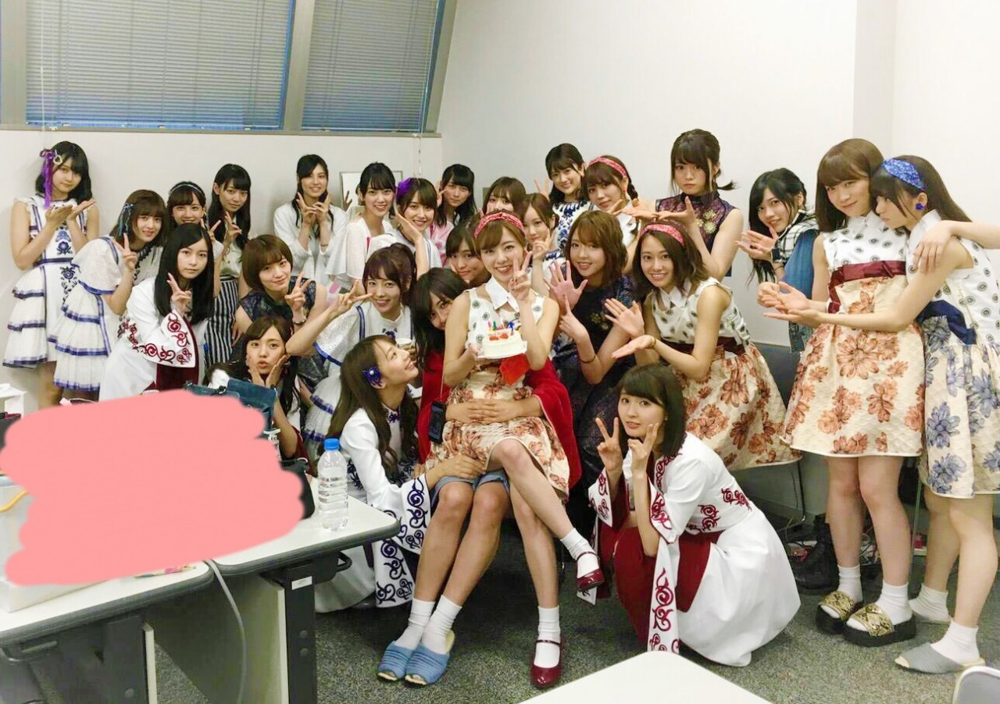
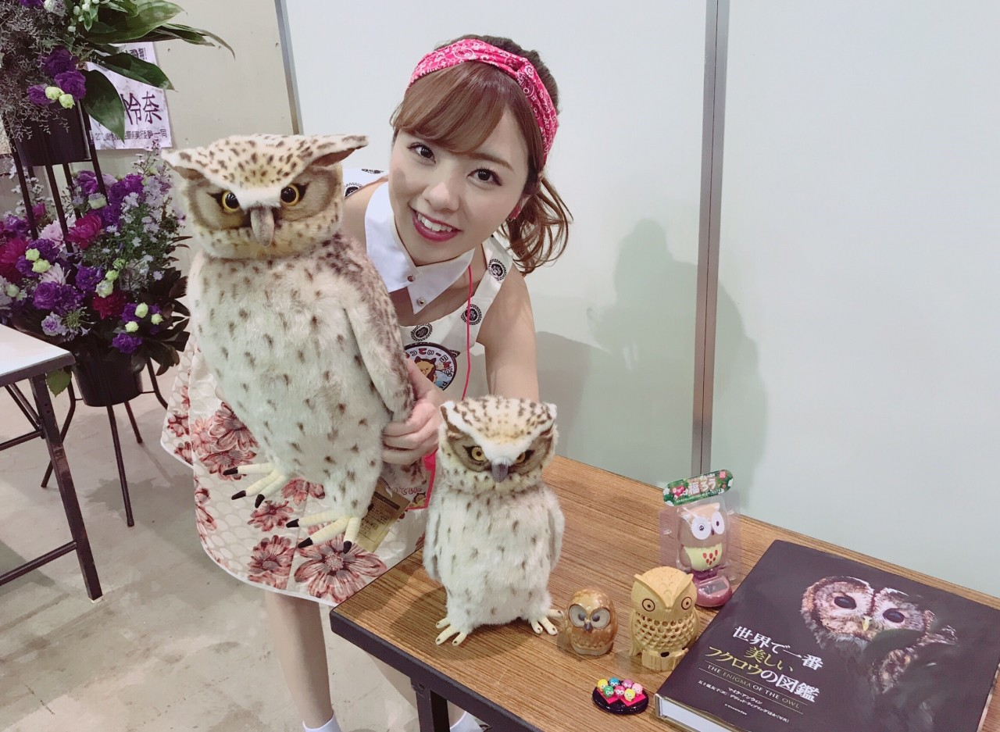
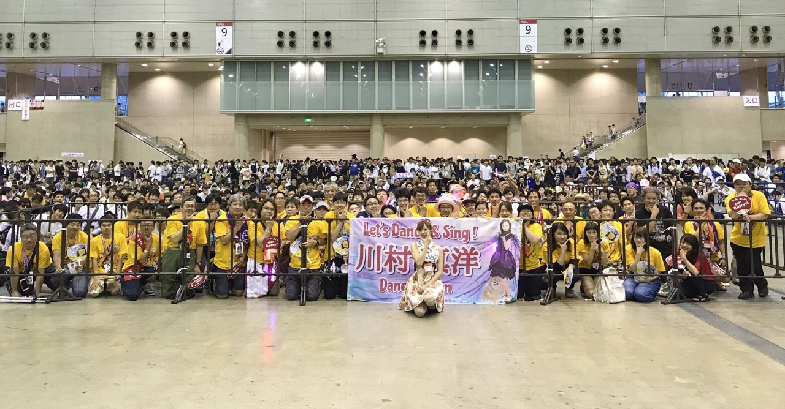
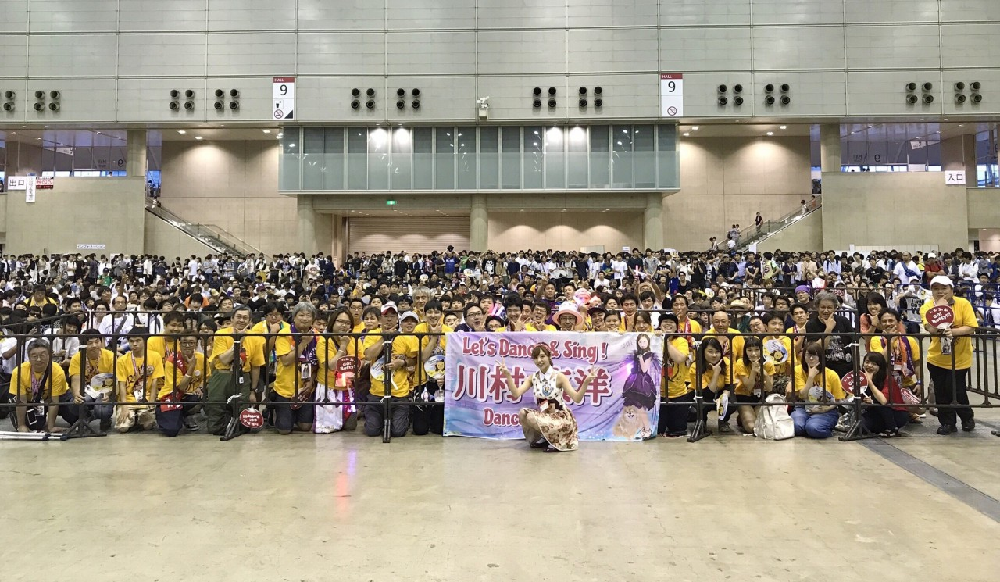

こんにちは♡
この度23日に22年目のお誕生日を迎えました。


素敵な誕生日で本当に幸せでした♡
誕生日は握手会でして，ファンの皆様が生誕祭を開いてくださり，私がフクロウ好きって事で，レーンはフクロウの装飾でいっぱい‼︎笑
お忙しい中，素敵な生誕祭を開いてくださり本当にありがとう♡♡

私はこんなにも素晴らしいファンの皆様と大切な仲間達に出会えた事が本当に幸せですし，大好きな場所で誕生日を迎えれた事は本当に嬉しいです。
特に秀でたものが無い，未だに大勢の前に立つと緊張して上手く喋れない，そして何年たっても 右も左も前も後ろも360度分からない 笑、 そんな私の事をずっと支え応援してくださっている皆様、、
本当に本当に感謝の気持ちでいっぱいです(*^^*) ありがとうございます‼︎‼︎
そして微力な私ですが，何故か仲間から沢山の愛をもらいまくり毎日幸せです♡笑 （私も皆にたーくさんのウザい位の愛を振りまいてるつもり(°▽°)）、、、私がボケたら（ボケてるつもりはないですが） 皆が優しくつっこんでくれる。。笑
そんな感じの日々を送り早6年、
16歳で乃木坂に入って22歳となりました。 次の誕生日はどこで迎えるんだろう？
と言う事で、
皆さんとの写真です‼︎

♡

では、又更新しますね♡
本当にありがとう‼︎